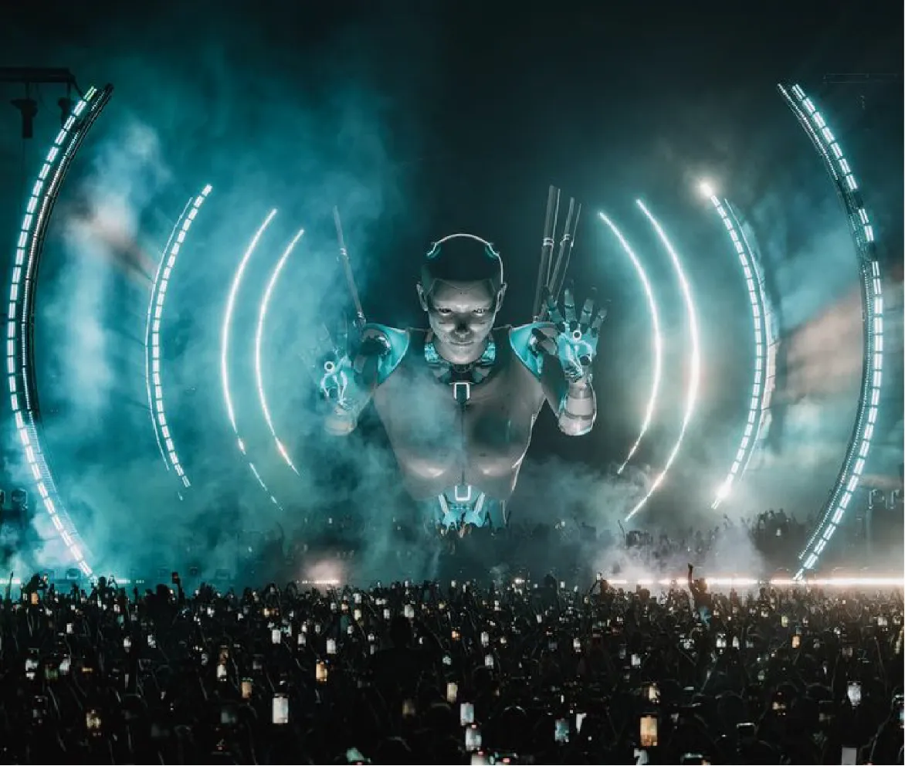

Development History
Currently, VJing in China is still in its early stages, and it is challenging to trace the exact beginnings of VJing in the country. However, we can review the history of nightclubs. The development of nightclubs in China began in the late 20th century, during the 1970s and 1980s, coinciding with the tail end of the international disco music trend.
The history of VJing in China can be traced back to the emergence of video art or MTV. The rise of video art, facilitated by the widespread availability of televisions,provided a visual form for the public. The introduction of MTV directly combined music and visuals, laying the foundation for the integration of music and visual arts.
"However, unlike the development of Western visual arts history, China did not go through the phases of video art since the 1960s, experimental films in the 1970s, and the prevalent MTV culture of the 1980s in the West"*.
(Guo, X, 2011). “The earliest practitioner of video art in China, Zhang Peili, completed his first video work, '30 × 30'
, in 1988, which was publicly displayed at the 'China Modern Art Exhibition' in 1989, marking the first video artwork in mainland China.” (Jiang, X, 2014).
“MTV, as a new art form, entered China in the 1990s. Starting in 1993, the continuous hosting of the China Music Television Awards by China Central Television greatly promoted the vigorous development and maturity of MTV in China” (Cheng, H, 2007). “The first domestic MV in China was the classic children's song 'Little Snail Horn'.
Following this historical period, I have summarized several reasons for the emergence of VJ culture in China:
• The vigorous development of LED product technology and its application from 2003 to 2007 provided extensive opportunities for large-screen technology, creating a thriving market and facilitating the widespread application of large-screen technology in various fields.
• Inspired by foreign experiences, the operational model of domestic nightclubs actively incorporated the profession of VJ, making visual presentation an integral part of nightclub management.
• The phenomenon of foreign DJs bringing their own VJ performance teams to international electronic music festivals prompted domestic clubs to seriously consider how to enhance competitiveness through visual forms, surpassing the current reliance on music and lighting alone.
• Some overseas Chinese entrepreneurs, having accumulated experience in foreign clubs and electronic music festivals, returned to China to start their businesses. During the initial stages of entrepreneurship, they directly considered the VJ profession, gradually establishing this industry in the country.
Number
Through rough estimation, the number of VJs in nightclubs, bars, music festivals, and electronic music festivals across China is projected to be between 9,000 and 10,000 individuals. VJ Tom stated, “I can make an estimate: I think it should be around 9,000 to 10,000. Because I calculated it, considering my social circle, including TikTok, Bilibili, and other video platforms, adding up all my followers, currently, it's just over 10,000. Then, in the Resolume CN_VJ group, where only talented individuals can join, there are over 300.
[...] If we talk specifically about electronic music festivals, there should be a total of around 3,000 VJs.”
Distribution
The distribution of VJs is closely tied to the distribution of clubs and the development of electronic music. VJing in clubs is predominantly concentrated in major cities such as Beijing, Chengdu, Shanghai, and Guangzhou.
The uneven economic development in China, characterized by a mix of pre-modern, modern, and post-modern conditions, results in a stark contrast between club culture in first-tier cities and small towns. Taking my hometown Zhengzhou, the provincial capital of Henan, as an example, a large nightclub called Mexx in the city center, featured a stage and VJ performances, with charges based on seating arrangements ranging from 198 to 600 yuan(≈ 25-77 euros)
However, in the small town I lived in, approximately 35 kilometers away from the city center, the best bar I've visited is Soul-Relieving Tavern.
“According to data published by the
"Little Deer Corner Think Tank"*
under the Music Economics umbrella, electronic musicians in China are distributed across various provinces and cities, but the landscape remains largely undeveloped. There is a lack of coherent training models and developmental soil, with the Guangdong region emerging as a key hub for the development of electronic music culture in the country”.
(Entertainment Consumption Research Institute, 2023).
Job Content
The work of a VJ can be divided into two main components: software operation and hardware usage.
“In terms of software, VJs employ a variety of tools such as Resolume, Arkaos, Modul 8, VDMX, VisualJockey SP1, TouchDesigner, Max/MSP Jitter, Pure Data, VVVV, Processing, OpenFramework.” (VJ Elephant, 2020). Additionally, VJs may use post-production software for animation and editing, such as Premiere (Pr) and After Effects (Ae), and modeling software like Cinema 4D (C4D). The primary software choice varies among individual VJs. For instance, in interviews, Keefer mentioned using Unreal, Jimmz prefers Touch Designer, and TonyMark utilizes VVVV and Resolume.
“In terms of hardware, VJs utilize a diverse range of equipment, including Wii controllers, Xbox gamepads, flight joysticks, foot pedals, standard 25-key MIDI keyboards (e.g., M-AUDIO Oxygen 25), standard MIDI controllers (e.g., APC40), standard DJ MIDI controllers (e.g., Pioneer DDJ-SR), iPads, iPod touches, Kinect, and more.” (VJ Elephant, 2017).
VJ Tom: “After I started working with front-end devices in 2019, I began learning software in the following two years. This involved studying playback control software, post-production software, and other aspects like processors and servers. To simplify, everything a VJ does can be condensed from control to computer, computer to video processors, video switchers, and then connecting to screens.”
{kind=link}
{kind=link}
03 Club VJ & Music Festival VJ
In clubs, VJs are professionals who collaborate with DJs and lighting technicians to enhance the atmosphere of the venue. Typically individual practitioners, their performances are live and spontaneous, as VJs may not know what music the DJ will play. In the current nightclub culture in China, there is relatively low emphasis on visuals, with clubs relying on lighting technicians and DJs to create the atmosphere. Despite numerous DJ and lighting training programs in the country, there is a lack of dedicated training for VJs. Aspiring VJs often need to find mentors in nightclubs for apprenticeship, as club owners may have lower aesthetic expectations and less specific requirements for VJ content, leading to some VJs choosing to present similar or repetitive material on a daily basis.
Educational Background
Currently, individuals engaging in VJing in China typically undergo training through an apprenticeship system, where experienced practitioners within clubs personally impart their skills.
The entire training system primarily revolves around imitation of preferred works, representing a form of mimicry. Often, they directly download materials from the internet for playback, lacking consideration and reflection on fundamental design issues*.
Creep : “ Initially in China, VJing followed an apprenticeship model, with apprentices learning under experienced individuals within nightclubs. As of 2021, many still use pirated software like Resolume. Their entire system is based on imitation, a 'take it and use it' approach, without delving into the foundational questions of 'how,' 'what,' and 'why.' ”
Due to the generally low cultural literacy of practitioners and the scarcity of training in arts and design, aesthetic concepts have persisted for years without a profound understanding of design. TonyMark: “The awareness of nightclub VJs in China is insufficient because many VJs only have education backgrounds ranging from high school to college, and even college graduates are rare.” Jimmz: “Speaking of educational levels, European cultural and educational standards are undoubtedly higher. Therefore, the aesthetic foundation is quite different. The aesthetic foundation in China is perhaps more varied, and European VJs, with a better aesthetic foundation, create with a different artistic height in mind.”
Salary and Working Hours
The following information is sourced from the video blogger “Uncle TUTU”, who, starting as a VJ from scratch and later managing a nightclub, provided insights into VJ salaries and working hours in his Bilibili video on February 15, 2021 :
• Zero-based Apprentice
Monthly salary around 3000 RMB (≈392 euros), responsible for managing electrical switches, troubleshooting equipment, and playing early session MV videos. Does not perform live VJing.
• Advanced Apprentice
Monthly salary of 5000 RMB (≈653 euros), responsible for live sessions after 1:00 AM in the nightclub, suitable for apprentices transitioning from zero experience.
• VJ in Small Clubs
Monthly salary between 5000-8000 RMB (≈653-1045 euros).
• Assistant VJ in Clubs
Monthly salary of 12,000 RMB (≈1567 euros), apprentices transitioning to this role after working in small clubs. Responsible for the front stage before 22:00 and the explosive session at 00:00. Should avoid obvious mistakes with a significant number of guests, but not as intricate as the main stage.
• Main VJ in Clubs
Monthly salary of 15,000 RMB (≈1959 euros), responsible for the main stage at 23:00, typically an experienced professional who understands music structure. If they create their own materials, the monthly salary may be higher than 15,000 RMB.
• Post-production VJ
Monthly salary of 15,000+ RMB (≈1959+ euros), proficient in Resolume Arena, as well as Photoshop, After Effects, Premiere, and Cinema 4D. Creates bar, DJ, and MC logos and model animations.
• Console Supervisor/Visual Director
Monthly salary of 20,000+ RMB (≈2613+ euros), comprehensive understanding of nightclub positions, responsible for equipment preparation in the early stages of nightclub operations.)
However, the above data is for reference only, as the domestic COVID-19 situation in China has greatly impacted the nightclub economy. Currently, nightclubs in China are undergoing staff reductions for VJs, leading to a situation where VJ skills and salaries are quite chaotic. VJ Tom: “Salaries depend on the level because there are different levels, some earning 20,000 RMB(≈2613 euros), and others earning 6,000 RMB(≈777 euros). Today, I just met a VJ from a club in Hefei. He doesn't have many works or a portfolio. He jumped from a salary of 8,000 RMB(≈1045 euros) to 12,000 RMB(≈1567 euros), and then from 12,000 RMB to 20,000 RMB in just over a year. It's quite chaotic. [...] The number of VJs in a nightclub used to be around 4 people, but now it's down to 2 in some cases, and even 1 in others. Due to the current unfavorable environment, staff reductions have taken place.”
Existing Issues
• Lack of creative concepts and aesthetics:
The unique nature of the nightclub economy poses significant challenges for those involved in design and artistry on a commercial level. VJs’ responsibilities are often qualitatively defined as creating an atmosphere in the club, aiming to ignite the audience's enthusiasm and ensure a vibrant club ambiance. As a result, they lack a means of self-expression. TonyMark: “To put it plainly, nightclubs don't need VJs to express too much. Nightclubs only require VJs to play the most exciting content. Even in high-level nightclubs, VJs primarily focus on pleasing the audience, emphasizing the popular and local style.”
• Lack of copyright awareness:
The use of pirated software may be related to cost considerations, as software tends to be relatively expensive. Some nightclubs may opt for pirated software due to economic considerations.Keefer: “Many nightclubs in China have been using pirated software that hasn't been updated for years, resulting in outdated functionalities. They still rely on downloading materials from websites, with, at most, some animations created for the club's logo.”
Causes of the Issues
• Chinese education system:
Based on my own experience and observations, students need to exert significant effort to pass exams and secure a place in a good university. They invest a substantial amount of effort and cost to obtain quality education, to the extent that after graduation, they are not inclined to choose a profession like nightclub VJing, which offers low pay, poor treatment, disrupted sleep patterns, and lack of recognition. Their baseline expectations for employment have been elevated due to the high cost of education, and they hope that their advanced degrees will bring substantial returns. Creep : “Artists coming out of art schools are particularly lazy. They don't want to spend every night in the club working as a VJ; they want to engage in free creation, so they establish studios. ”
Development Trends
• Fresh Visual Styles
The nightclub industry is currently undergoing a wave of reflection on aesthetics and system operations. With an increasing number of international DJs performing in Chinese clubs, it has become common for them to bring their own VJing teams. This cross-cultural exchange has prompted a stronger reflection on aesthetics and system operations within domestic club VJing, forcing them to break away from rigid past models. Creep : “Even large domestic clubs are exploring new things and understanding the content and knowledge behind them. For example, starting in 2019, the entire industry began to embrace styles like 3D and cyber

• Educational Enhancement
In addition, as more experienced VJs enter the field of education, the entire industry will continue to improve, but it will take time. TonyMark: “In terms of trends, in my opinion, it will take another 5 to 10 years to cultivate talent. Currently, there is a severe lack of good VJs, and the design education level of this group of people needs to be elevated for improvement to be possible.”
VJs in music festivals differ significantly from those in nightclubs in terms of visual presentation. Within China, large-scale commercial music festivals such as the Strawberry Music Festival, the MIDI Music Festival, the Modern Music Festival, and the Maitian Music Festival invite pop singers, bands, and rock musicians for performances. Audiences attending these music festivals primarily seek to enjoy the performances of their favorite artists. In large music festivals, the role of VJs is primarily to highlight the artists, serving as a background element. Additionally, some bands have their own VJs, contributing visually stunning effects that are meticulously rehearsed and aligned with the band's overarching vision. Moverover, VJs at electronic music festivals differ in visual presentation from those at large-scale commercial music festivals, they enjoy relatively more creative freedom.
Classification
• Commercial music festivals
a. Venue-Provided VJs
TonyMark mentions, “If you want a good VJ, it can be quite expensive. However, to cut costs,
organizers often directly use those who provide LED screens for the music festival venue*.
These VJs are associated with the current trend at many music festivals, where cost-effectiveness is a primary consideration.” Their main responsibility is to deliver basic visual effects that align with the overall requirements of the music festival. They typically do not have the flexibility for on-the-spot creativity and primarily broadcast images of artists directly captured by cameras. VJ-Tom adds, “Nowadays, it's mostly two big screens with portraits hanging there, and the lyrics are usually displayed. The visuals depend on the venue, as stability is the priority.”
b. Market-Found VJs
Organizers search for VJs based on the theme or overall style of the music festival. These VJs maintain a certain personal style in their creations while customizing their work according to the organizers' expectations. This approach showcases both the VJ's individual creativity and professional expertise, meeting the organizers' requirements for the overall visual effects.
c. Band's own VJ
Band's own VJ is characterized by its relative stability and high degree of freedom, which provides the VJ with greater room for progress and opportunities for rapid improvement. In terms of visual presentation, each performance showcases unique visuals that undergo improvement and enhancement while retaining distinctive visual features. Take, for example, the band “The Right to Reshape Statues”.
• Electronic music festivals
VJs at electronic music festivals enjoy relatively more creative freedom, with fewer thematic restrictions. Most well-known electronic music festivals in China are imported from abroad, such as VAC China, EDC China, Ultra China, Creamfields, and more.
Commercial music festivals Visual Content
As an example, taking the recent Strawberry Music Festival held in Guangzhou, China (November 18-19, 2023), this showcases the visual content classification of large-scale commercial music festivals. The Strawberry Music Festival is one of the largest music festivals in China, established in 2009 by Modern Sky, the largest independent record company in mainland China.(Wikipedia) The visuals displayed by VJs at the Strawberry Music Festival are somewhat representative.
• Portrait :
Screenshot from the video "Guangzhou Strawberry Music Festival - Full Video from the Sound Control Platform of The Life Journey," Video by zaso, sourced from bilibili, URL: https://www.bilibili.com/video/BV1zz4y1c7ve/?spm_id_from=333.337.search-card.all.click&vd_source=6dfad10505c04db615a4fe457ce2079b
• Lyrics :
Screenshot from the video “2023 Guangzhou Strawberry Music Festival - ChiliChill ‘Escape,’” video by -Little Star-, sourced from Bilibili, URL: https://www.bilibili.com/video/BV1Jb4y1u7EA/?spm_id_from=333.788.recommend_more_video.1&vd_source=6dfad10505c04db615a4fe457ce2079b
• Prepared Visuals:
Screenshot from the video “2023 Guangzhou Strawberry Music Festival - Secondhand Roses ‘Light and Fluttering’”,video by Evening Overtime, sourced from Bilibili, URL: https://www.bilibili.com/video/BV1LN4y1m78M/?spm_id_from=333.337.search-card.all.click&vd_source=6dfad10505c04db615a4fe457ce2079b
• The proportion of playing these visuals:
TonyMark: “In China, the majority prefer direct shots of portraits, broadcasting them live. While this is not bad because the audience wants to see the singers, besides that, if you explore more, you'll find that a significant percentage, for example, around 30%, involves direct shots of people with a bit of additional material layered on them. Another significant percentage, roughly 40-50%, or even 60%, involves adding pre-prepared visuals. Very few percentages, maybe less than 10% or even less than 5%, involve personal creations with some aesthetic and artistic elements included.”
However, based on the author's observation of live recordings, this ratio is not fixed. Portraits and visuals creation can appear simultaneously at the Strawberry Music Festival. The main screen in the center displays visual creation, while two side screens broadcast portraits or the crowds.
Screenshot from the video 'Strawberry Music Festival in Guangzhou "If Dream" Full-screen Panoramic Stable Version,' video by ClaudiaL, sourced from Bilibili, URL:https://www.bilibili.com/video/BV1vN4y1m7Uz/?spm_id_from=333.337.search-card.all.click&vd_source=6dfad10505c04db615a4fe457ce2079b
Existing Issues
• Market Saturation:
There is a relatively high number of VJs in the market, while the demand of the VJs for music festivals is limited, leading to intense competition. Many VJs struggle to find sufficient resources and opportunities. For example, when author sought interview subjects, I found the VJ studio "looploop." However, the studio manager indicated that they had ceased operations, highlighting the difficulty of sourcing resources in the industry. Additionally, VJ-Tom mentioned, 'I wouldn't recommend newcomers to learn VJ because the current environment is challenging. If you don't have any performance resources, lack creative ability, and ideas, and you're just looking to earn a high salary, I wouldn't advise you to learn VJ. Even if you learn it, there's no guarantee you'll find a job.
• Lack of Development Environment for Electronic Music
The prosperity of the VJs industry is closely tied to electronic music. However, the development of electronic music festivals in China faces significant government constraints. There are substantial limitations on the approval of large event venues domestically. According to the “Regulations on the Safety Management of Large-scale Mass Activities”: “events with attendance ranging from 1,000 to 5,000 participants require approval from county-level public security agencies, while those with over 5,000 participants need approval from municipal or directly governed city public security agencies.”
Moreover, when foreign DJs come to perform in China, there is also a scrutiny process for them. According to the “Notice on the Approval of Overseas Commercial Performances” : “it stipulates that the approval document for commercial performances must be verified through the 'Information System for Invitation Letter Management for Visa to China.” Failure to pass the verification process will result in the non-issuance of a visa.
VJ-Tom : “Firstly, the main issue domestically is the excessive restrictions. Even accessing the internet requires circumventing the Great Firewall. (Accessing YouTube in China requires using tools to bypass restrictions, such as a VPN, to watch videos.) The government's attitude toward electronic music is crucial. If there is effective promotion, the VJ industry would likely thrive. The challenge is that foreign DJs find it difficult to organize electronic music festivals in China, resulting in a shortage of quality resources. ”
04 Audio-Visual Performance Artists & Comparison
Conceptually, audio visualization performances belong to the category of audio visualization interaction, which currently belongs to the field of digital media design in China.
Development
Tracing the development of audiovisual interactive art in China, according to the "Audiovisual Art White Paper'' released by the School of Art Design and Media Department of East China University of Technology on November 29, 2023: "With the hosting of major international events such as the 2008 Beijing Olympics and the 2010 Shanghai World Expo, along with advancements in network and computer technologies, audiovisual interactive art has rapidly emerged in China. Initially, in the Shanghai region[...]especially around 2010, when the Shanghai International Electronic Music Competition witnessed the emergence of audiovisual art. In 2015, the Ofopen Creative Coding Competition, jointly organized by Tsinghua University's Academy of Arts & Design[...] and Parsons School of Design in the United States, promoted the application of creative coding techniques in universities."
Development Factors
• Software Tools:
Based on personal observations, Chinese students predominantly utilize Touch Designer and Processing when creating audiovisual interactive works. Professor Zhang Yinan introduced Touch Designer to Tongji University between 2011 and 2012, organizing workshops with the company over approximately a week's duration. The establishment of the
TEA Chinese education community*
in 2019 contributed significantly to the widespread use of Touch Designer, providing substantial impetus to audiovisual interactive performances.
• Art Forms:
In terms of artistic exploration, the forms of new media art and installations abroad have sparked significant interest among Chinese artists. Some artists began experimenting with these forms around 2008, with a second and third wave of exploration occurring around 2012-2013. This suggests a gradual increase in the recognition of domestic artists towards new media and interactive art forms.
• Universities Specialization:
Universities are progressively establishing programs related to audiovisual interaction*.
Terms such as "cross-media design" and "audiovisual design" are being introduced, incorporating the fusion of music and visual elements into the exploration domain. Major art academies in China are initiating specialized programs. As expressed by TonyMark, “Around 2015, these programs began to emerge gradually. Schools like Guangzhou Academy of Fine Arts had new media courses as early as the 2000s, but they were not given sufficient attention at the time. However, post 2018, these programs started to enroll large numbers of students, indicating a growing demand for expertise in this field, with students increasingly showing interest.”
Artists
•Wang Meng + Yu Miao
Social media: https://www.youtube.com/@miaoyu9594/featured
& https://space.bilibili.com/85447149
Wang Meng handles the visual elements, while Yu Miao is responsible for the music. Yu Miao primarily performs using the traditional Chinese instrument, the Guzheng, exploring unconventional playing techniques to discover new possibilities.What sets these two apart from many other Chinese artists is their innovative approach, breaking away from directly replicating old traditional visuals and music.
Elements used
Wang Meng's visual style is typically 3D, incorporating elements such as ancient Chinese architecture, flowing water, and crowds. The scenes crafted by Wang Meng often feature grand Chinese-style backgrounds but with fantastical and wildest narratives. For example, the screenshots in the provided link showcase people swimming in the air or buildings growing legs and walking.
Performance place
In addition to regular performance spaces, they also perform in caves and grottoes. Leveraging their 3D visual style, projections onto irregular stone surfaces add depth to the visuals. The cave structures enhance the music with multi-layered echoes. The provided link includes images of projections on stone walls in a valley in Qingdao, as well as performances in the Zunyi Shuanghe Cave.
•Guan Boyang
Guan Boyang's profile links: https://www.youtube.com/@boyangguan114
、https://space.bilibili.com/37578604
、https://guanboyang.bandcamp.com/album/guan-the-immortal-tide
Guan Boyang possesses strong technical and expressive abilities in music production. As an artist, he often integrates his thoughts into his work. His latest album explores the relationship between the online world and life. He describes it as, "Blending suitable styles like IDM, Techno, Ambient, etc., through synthesizer modulation and wild sample processing, I construct a seemingly parallel yet incredibly real otherworldly landscape. I insert a pair of virtual alter egos into this world to advance the plot."
In November 2023, he presented a solo live music and visual performance titled "CROTALUS 360"
•Wang Changcun
Wang Changcun (AYRTBH), a sound artist, electronic music composer, computer musician, and software/network art creator. Profile links: https://changcun.wang/
、https://space.bilibili.com/626179959
、https://www.instagram.com/ayrtbh/
Wang Changcun is one of the earliest explorers in the field of experimental electronic music and computer-programmed composition in China. His long-term artistic practice is closely related to non-traditional art languages such as digital, network, and algorithm, often reflecting the dilemma of people's movement in established spaces through virtual structures.
Wang Changcun's visual design, as described on his personal website, appears to collect images commonly seen in the online world, transforming them into a new visual format presented to the audience.
•GOOOOOSE
Profile links: https://www.instagram.com/hanhan_gooooose/
、https://www.annexagency.co.uk/gooooose
GOOOOOSE is Han Han. His multi-instrumental approach of making music usually leads the audience into a place where ambient soundscape, heavily synthesized texture and syncopated rhythms find their harmony, yet still fighting with each other sometimes. Apart from making music, Han Han is also a visual artist and software developer, also frontman of one of China’s electronica bands - Duck Fight Goose and owner of Miniless Recordings.
His work "Voxels — A Research of the 21st Century Species"
, performed by him in November 2023 at offscript x UFO Terminal at TankShanghai, serves as a visual extension of his album "Rudiments." In the process, a cluster of metallic-glossed lines intertwines, resembling a lifelike entity that pulsates with the rhythm of the music, almost as if it breathes.
Existing Issues:
• Limited Art Themes:
Society often fails to fully appreciate, and sometimes even disregards, the normal demand for art. Artists often find themselves restricted to themes that are surface-level and avoid social pain points, constraining true creative expression. Especially post-pandemic, the highly regarded theme of "healing" in China has not triggered profound societal reflections but has evolved into a means to soothe emotions.(Doing art against the government in China will risk prison.)
• Insufficient Financial Support:
Domestically, there is inadequate support for artists, lacking dedicated mechanisms to provide funding and subsidies. Jimmz: "Actually, every year, organizing performances or exhibitions for the Light Art Festival(A digital media art festival organized by TEA) involves a financial investment. A significant portion of the funds from our other commercial projects is allocated to this."
• Lack of Social Status:
Artists lack sufficient recognition in society, with many viewing those studying design and art as symbols of poor academic performance or idleness, rather than individuals making career choices based on their interests.
• Bias in Employment Choices:
Even graduates from design and art colleges rarely enter the new media art industry. Employment decisions predominantly depend on salary and alignment with mainstream values, diminishing the importance of individual interests. This constrains exploration and support for more experimental and innovative fields of art.
Comparison
The summary table I have compiled provides a general overview of industry practitioners, without delving into individual cases.
| Categories | club VJs & festivals VJs | Audio-visual performance |
|---|---|---|
| Design Content | visual | visual & music |
| Visual content | Less use of self-produced material | Self-produced material |
| Relationship between Music & Visual | The music or singer is the main thing, the visual is secondary | The visual is the main thing |
| Aim | Enhance the atmosphere of the music | Convey the artist's story or idea |
| Freedom of Creativity | Low | High |
| Educational Level | Low, mentorship | High, art or design background, with aesthetic foundation |
| Design Process | Imitate of popular effects | Have expressed story line and then create |
| Software/Hardware Usage | Fixed on one | The choice of software depends on the desired artistic outcome |
| Audiencee | People who come to clubs or festivals to listen to music or go dancing | Art or design peers, people interested in new media design |
Besides, in terms of real-time and improvisational aspects of VJ performances, nightclub VJs typically leverage pre-prepared visual elements, utilizing Resolume to make on-the-spot adjustments such as rotation, speed modulation, and distortion to synchronize with the musical performance of the DJ, demonstrating a degree of improvisation. In the context of music festivals, VJs, driven by considerations for stability and minimizing errors, often opt to play prepared materials, with seldom manifestations of real-time adjustments.
Within the artist community, some artists choose to directly play prepared materials to maintain a distinctive personal style. In contrast, other artists, such as Guan Boyang, adopt a production method that involves direct generation based on live sound, constituting live generation.
05 Conclusion
This study provides an exploration of the current state of VJ development in China. Through chapters on nightclub VJs, festival VJs, and music visualization artists, it reveals that the development of VJ culture in China is still in its early stages. Despite certain issues such as emulation of popular foreign visual styles, a lack of individual reflection and innovation, and insufficient attention to copyright concerns, the future growth of VJ appears promising.
In the process of development, the VJ industry in China faces various challenges, including government restrictions, lagging education levels, and students' preferences in employment choices. In order to promote the better development of VJ, emphasis should be placed on the development of software and aesthetic education. Furthermore, VJs can seek international opportunities to foster exchange and learning.
While it may be challenging to alter governmental decisions, individuals can continuously enhance their personal skills and innovation capabilities, contributing to the advancement of their own development.
Beyond exploring the VJ profession, this study also intends to broaden the understanding of the future development direction of new media design in China. As a student in the field of media communication design, navigating the uncertainties of future career development is a profound challenge. Thus, by immersing myself in VJ research, I hope to gain a deeper practical understanding of media communication design and identify potential directions for my future works. Simultaneously, this research serves as a reference for fellow students who may be grappling with uncertainty about their future career paths.
Appendix
Interviewee introduction
| Keefer | VJ from Taiwan, often come to mainland China to do VJ projects, started to work as VJ from 2012. |
| Jimmz | Chinese VJ & Digital Media Designer, graduated from Tongji University as an undergraduate, studied in Canada as a master, one of the leaders of TEA Chinese community. First worked as a VJ in a bar in 2012. |
| Creep | Chinese nationality, currently teaching & working as an artist in Holland, with a unique perspective of Chinese club development. |
| TonyMark | Chinese VJ & Digital Media Designer with a Bachelor of Science background. Started digital media design in 2012, also doing music festival VJ projects. |
| VJ Tom | Chinese VJ, initially built LED screens for music festival sites, self-taught to become a VJ. Started to learn about VJs in 2017, and began to design music festival VJ projects in 2019. |
Reference
• Academic Paper
1. Cheng, H. (2007). Development and Trends of Music Television (MTV) in China. Film Literature 15
, 125.
2. Furs, V. (2023). VJing in the context of design practice in Finland. Aalto University. (Bachelor's thesis)
3. Jiang, X. (2014). The emergence of Chinese video art: A case study of "30×30". Qilu Arts: Journal of Shandong University of Arts
, (5), 53-54.
• Online Communities
1. Entertainment Consumption Research Institute. (2023, May 23). Electronic Music Market Resurgence Revelation: Foshan Grammy Collection is Reshaping Business Consensus for Peers Nationwide. Zhihu
. https://zhuanlan.zhihu.com/p/631509290
2. Guo, X. (2011, September 6). Some basic facts and narratives of Chinese visual arts. Sina
. https://collection.sina.com.cn/ddys/20110906/162637822.shtml?from=wap
3. VJ Elephant. (2020, October 21). Insights into commonly used VJ software and its learning curve. Zhihu
. https://www.zhihu.com/question/33992642/answer/266421334
4. VJ Elephant. (2017, September 9). Control devices for VJs - What are the control devices for VJs? Zhihu
. https://www.zhihu.com/question/25523800/answer/227686231
• Government Document
1. Central People's Government of the People's Republic of China. Order of the State Council of the People's Republic of China No. 505: Regulations on the Safety Management of Large-scale Mass Activities, passed at the 190th Executive Meeting of the State Council on August 29, 2007. Retrieved from https://www.gov.cn/gongbao/content/2007/content_786234.htm
2. Cultural and Tourism Department Office of the State Council. (2019, March 7). Notice on Further Standardizing the Approval of Foreign-Related Commercial Performances. Market Office Document No. [2019] 39. Retrieved from https://www.gov.cn/zhengce/zhengceku/2019-12/02/content_5457652.htm
• Official Online Platforms
1. East China University of Science and Technology, School of Art Design and Media, Media Department & xMANA Global New Media Art Platform. (2023, November 29). Audiovisual Art White Paper (p. 18). https://www.manamana.net/article/detail/1701227054579998100#!zh
• Wikipedia
1. Wikipedia. (2023, May 28). 草莓音乐节. Wikipedia. https://zh.wikipedia.org/wiki/%E8%8D%89%E8%8E%93%E9%9F%B3%E6%A8%82%E7%AF%80
2. Wikipedia. (2023, May 31). 陈琳. Wikipedia. https://zh.wikipedia.org/zh-cn/%E7%A8%8B%E7%90%B3
Advisor, David-Olivier Lartigaud
Random (Lab)
ESADSE